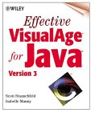

Resources

Effective VisualAge for Java, Version 3
by Scott Stanchfield and Isabelle Mauny
ISBN: 0-471-31730-6
- VisualAge for Java Tips and Tricks
http://www.javadude.com/vaj
A collection of useful techniques to improve your VisualAge for Java productivity. Many of these tips appear in this book, but keep an eye on the site for new tips!
- IBM VisualAge Developer Domain
http://www.software.ibm.com/vadd
Home to and excellent collection of articles and downloads related to VisualAge for Java. This site requires free registration to access most content, and they reserve some content for paid subscribers. Paid subscribers can download the Professional Edition of VisualAge from this site. Think of this as IBM's development view of the tool.
Note that this is where you can download upgrades to VisualAge for Java!
- IBM VisualAge for Java Product Home
http://www.software.ibm.com/vajava
The product homepage for VisualAge for Java. Think of this as IBM's marketing view of the tool.
- Developerworks Java
http://www.ibm.com/developerworks/java
IBM's excellent Java language programming site.
- AlphaBeans
http://www.alphaworks.ibm.com/alphabeans
Excellent JavaBeans that play in VisualAge for Java. This site gives free previews of future IBM commercial beans (which usually have a very reasonable price once they "graduate" to commercial beans.)
- Sun's Java Language Home Page
http://java.sun.com
The home of the Java Language. Lots of great information on the language, including future plans, articles, and product downloads.
- The Swing Connection
http://www.theswingconnection.com
A great online magazine from Sun on using the Swing toolset. Make sure you read the archived articles as well!
- The Java Tutorial
http://java.sun.com/docs/books/tutorial
An excellent online tutorial for most Java concepts. Also available in book form (see the site)
- Java Developer Connection Training and Tutorials
http://developer.java.sun.com/developer/onlineTraining
Several tutorials on the Java language, including many by MageLang Institute (now known as jGuru.com). NOTE This site includes the article "Effective Layout Management," a must-read article that helps you understand how layout managers can be nested to achieve your desired results. The perfect way to avoid the big bad evil GridBagLayout! (A totally unbiased opinion, by the way...)
- IBM Websphere Product Home Page
http://www.software.ibm.com/websphere
The product homepage for IBM's Webpshere Application Server. Provides links to invaluable information about WebSphere, including the WebSphere Java Zone at the VisualAge Developer Domain.
Copyright © 1996-2014, Scott Stanchfield. All Rights Reserved.
Contact me at scott@javadude.com
JavaDude.com Home
Rounded-corner figures based on "More Snazzy Borders" by
Stu Nicholls
 Want
to hear about new stuff at JavaDude.com? Use this RSS Feed!
Want
to hear about new stuff at JavaDude.com? Use this RSS Feed!